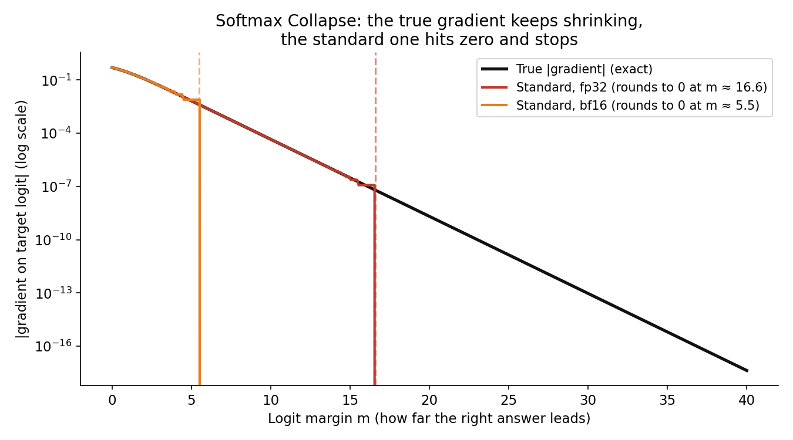
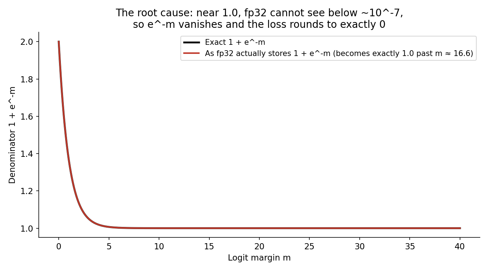
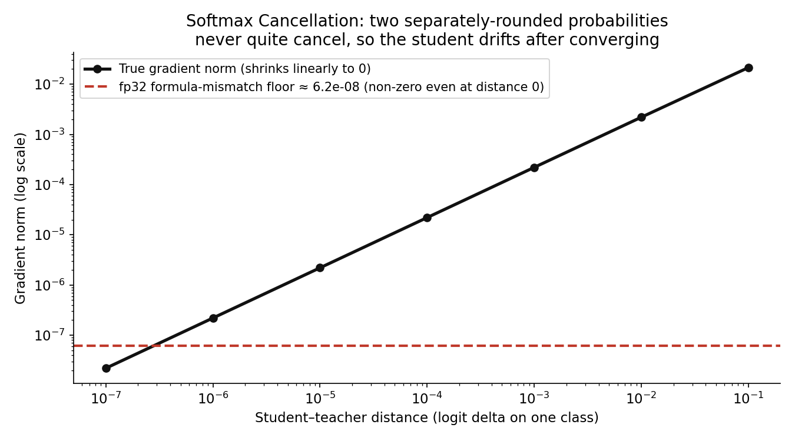
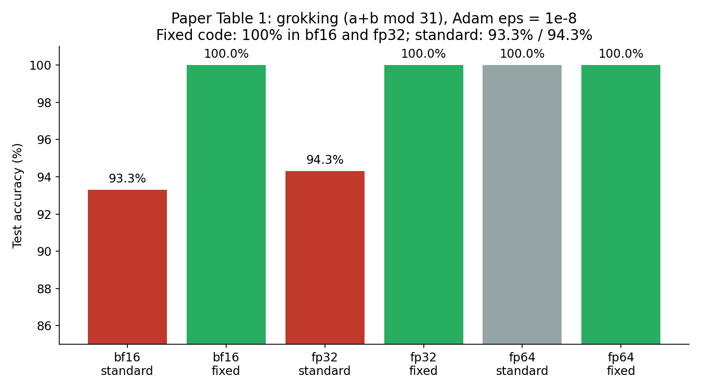

Every model you have ever trained runs through the same two functions: softmax turns raw scores into probabilities, and cross-entropy scores how wrong those probabilities were. On October 22, 2026, three Google DeepMind researchers — Jonathan T. Barron, Dan Gnanapragasam, and Michael Tschannen — posted a paper arguing that every standard implementation of both functions, in JAX, PyTorch, TensorFlow, and the textbooks, contains two numerical bugs. The fix is a short rewrite using softplus, expm1, and log1p. On the paper's grokking benchmark it takes bf16 test accuracy from 93.3% to 100%.
This is not a story about a new architecture. It is a story about arithmetic — about what happens when you add a very small number to 1.0 and the computer quietly says "that's just 1.0."
The ELI5 version
Imagine a scoreboard with 10,000 slots, and you can only write numbers with about 7 decimal digits of precision. Your model is winning by a lot: the right answer scores far above everything else. To report how confident it is, you need to write down a number like 0.00000004 — the tiny leftover probability of being wrong.
The problem: the standard recipe computes that number as 1 + 0.00000004, then subtracts 1. On your 7-digit scoreboard, 1 + 0.00000004 rounds to exactly 1, and 1 - 1 = 0. The model was 99.999996% confident, and your bookkeeping now says it was 100% confident with zero room left to learn. Worse, the other entries on the scoreboard are computed without adding 1 first, so they keep their tiny values. The gradients no longer sum to zero — the fundamental identity that gradient descent relies on — and the optimizer starts taking steps that are wrong in a specific, structured way.
The margin where this happens has a name in the paper: the precision cliff. It sits at a logit margin of about 5.5 in bf16, 16.6 in fp32, and 36.7 in fp64. Past the cliff, the gradient on the correct answer is exactly zero while the gradients on the wrong answers are not. The authors call this Softmax Collapse.

How it works: the max-shift trick and its one flaw
Softmax is exp(z_k) / sum(exp(z_j)), but computed naively it overflows — exp(88) already exceeds fp32's range. So every framework subtracts the largest logit first (the "max-shift" trick, standard since Higham 2002). After shifting, the largest logit becomes 0, its exponential becomes exactly 1, and the denominator becomes 1 + e^-m, where m is the margin: how far the winning logit leads the log-sum-exp of the rest.
Here is the asymmetry that creates the bug. Floating-point numbers are much denser near 0 than near 1: in fp32, values near 0 can be as small as ~10^-38, but anything added to 1.0 vanishes below ~10^-7. So e^-m survives fine in the numerators of the losing classes — those are computed directly, without adding 1 — but the moment it is added to 1.0 in the denominator, it rounds away once m passes the cliff. The loss itself rounds to exactly 0 (log(1) = 0), the target gradient rounds to exactly 0 (q_t - 1 = 1 - 1), and only the losers keep their gradients. The gradient vector sums to a positive number instead of zero.

Why does a wrong-but-tiny gradient matter? Because of Adam. Adaptive optimizers normalize each gradient by a moving average of its magnitude, so a gradient that should be -4e-8 but reads as 0 while its siblings read as +1.5e-8 is not a rounding error Adam can average away — it is a systematic, one-sided distortion, repeated every step. The paper traces two previously mysterious phenomena to exactly this: the recurring "slingshot" loss spikes in grokking runs (Thilak et al. 2022) and grokking failures under weight decay (Prieto et al. 2025). Prior workarounds — surrogate losses, gradient projection, casting to fp64 — treated the symptoms. This paper fixes the function.
The fix is to never add 1 to e^-m directly. For hard-target cross-entropy, replace the target slot with the constant 0, compute the margin m from the other logits only, and return softplus(-m) = log(1 + e^-m) computed in a way that never forms 1 + e^-m as a rounded sum. Autodiff then gives the target gradient as the negated sum of the non-target gradients — so the gradients sum to zero by construction, accurate down to exponent underflow at margin ~88. The paper's own example makes it concrete: for logits [9, -9, -9] with target 0, standard JAX/optax return loss 0.0 and target gradient 0.0; the fixed code returns loss 3.046e-8 and gradients [-3.046e-8, 1.523e-8, 1.523e-8] — small, exact, and summing to zero.
The second bug: distillation drifts after converging
The second bug, Softmax Cancellation, hits knowledge distillation — the technique behind most small, deployable models, where a student network learns to match a teacher's probabilities. Standard code computes the student's probabilities with softmax and the teacher's with a separate log-softmax path, then subtracts. When the student approaches the teacher, the true gradient should shrink to zero. Instead it plateaus at a non-zero noise floor, because the two formulas disagree in the last bits of fp32.
The companion notebook reproduces this directly: for teacher logits [2.0, 0.5, -1.0], the forward softmax and the exp-of-log-softmax differ by a gradient norm of ~6.2e-8 even when student and teacher logits are identical. A converged student keeps receiving phantom gradients and drifts away from the teacher it already matched. The fix computes q - p directly from the logit difference z_S - z_T in log space (via expm1/log1p), so equal logits give exactly zero by construction.

The numbers: grokking, slingshots, and an Adam equilibrium
The paper's headline experiment is a small grokking benchmark — modular addition, a + b mod 31, mean of 5 seeds — and the table is the whole argument in six numbers:

- bf16: 93.3% → 100.0% (+6.7pp) and fp32: 94.3% → 100.0% (+5.7pp) at Adam's default epsilon of 1e-8. The standard bf16 run stalls at a final margin of 5.1 — just under its 5.5 cliff, the signature of a run that ground to a halt at the boundary.
- Slingshots eliminated. The fixed code removes the loss spikes that plagued grokking runs, speeds up grokking with weight decay, and prevents accuracy collapse without weight decay.
- Distillation stops drifting. Student networks trained with the fixed loss stay at the teacher instead of wandering off after convergence.
- A new equilibrium, not a runaway. After memorization, the paper shows logit growth is bounded by an equilibrium between weight decay and Adam's epsilon — a clean, testable prediction about what trained logits should look like, replacing the old picture of logits growing without bound until something breaks.
The honest caveat — where this could break
Three things to keep in view. First, this is a preprint from October 22, 2026, not yet peer-reviewed, and its headline numbers come from a small benchmark (modular addition with 5 seeds), not a frontier LLM run — the authors' claim is about the arithmetic, and the arithmetic is checkable in the notebook, but nobody has yet shown a 100B-parameter training run changing its outcome because of this fix. Second, no framework has adopted it yet: JAX, PyTorch, and TensorFlow still ship the standard code, so the fix today is a snippet you paste, not a version you upgrade to — and the paper's own framing says it is "most useful for grokking, interpretability, and distillation" rather than a guaranteed speedup for every workload. Third, the cliff is a low-precision story: at fp64 and default Adam epsilon, standard and fixed both hit 100%, so teams training in full precision were never exposed in the first place. The exposed population is everyone training in bf16/fp32 with Adam — which is to say, nearly everyone training a frontier model today.
Takeaways
- The bug is in the denominator, not the model.
1 + e^-mrounds to exactly 1.0 past margin 5.5 (bf16) / 16.6 (fp32) / 36.7 (fp64) — and that single rounding zeroes the target gradient while leaving the losers' gradients intact. - Adam turns a tiny asymmetry into visible damage. Normalizing per-coordinate gradients amplifies the one-sided error into slingshot spikes and grokking failures. The fix is in the loss function, not the optimizer.
- Distillation has its own floor. Two separately-rounded probability vectors never quite cancel (~6e-8 in fp32), so converged students drift. Computing the difference from logit differences fixes it by construction.
- The fix is three functions, not a new framework.
softplus/expm1/log1prewrites of log-softmax, softmax, and cross-entropy — drop-in JAX code in the paper, no meaningful slowdown claimed, gradients summing to zero down to margin ~88. - Check it yourself. The companion notebook reproduces both bugs in NumPy: the cliff crossings, the paper's
[9, -9, -9]example (loss 3.046e-8 vs 0.0), and the distillation floor. If your training stack runs bf16 with Adam, this is the cheapest audit you will run this year.